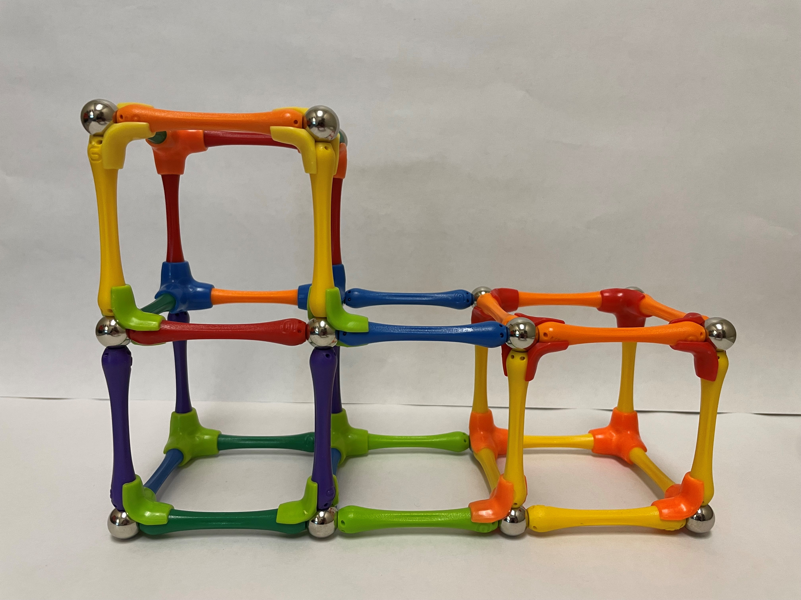
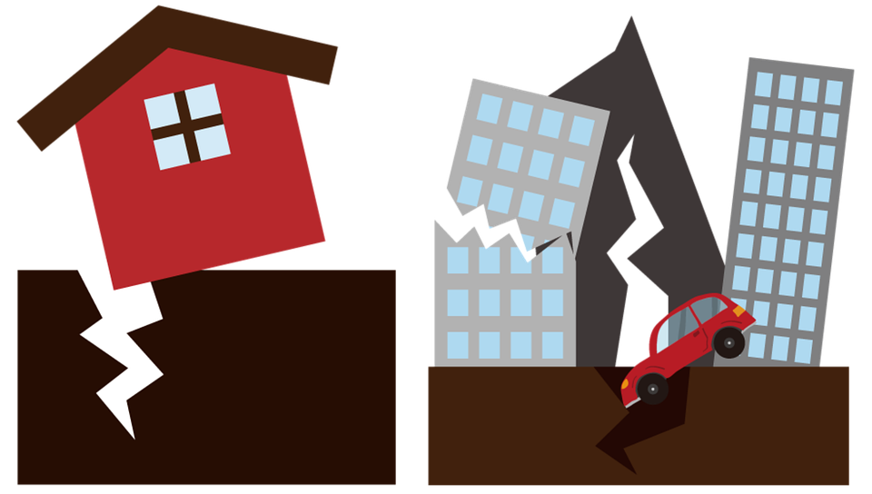

Do It! Goobi: Earthquake Engineering
 The Challenge
The Challenge
Your challenge is to design an earthquake resistant structure using Goobi. Collect data on your design including how many rods, spheres, and tripods are used in your design and calculate the perimeter and area of your design. Then, simulate an earthquake to test your structure and make changes to improve your design.
Project Steps
-
Brainstorm
-
Build Your Structure
-
Earthquake Simulation
- Redesign Your Structure
- Write A Report
Brainstorm
Brainstorm ideas to create an earthquake proof structure. When you are thinking about your design, what 3D shapes have you noticed that might make up buildings? How might you make it stable? Would the height or width impact stability? Engineers often come up with multiple designs that they test to see what works the best. You may need to do so today. Sketch your idea you would like to start with. You can always make changes later.

Build Your Structure
Using the Goobi pieces, construct your structure. For each build, complete the table below.

|
Table Head 1 |
Number of Rods Used |
Number of Spheres Used |
Number of tripods used |
Perimeter of Base |
Area of Base |
|---|---|---|---|---|---|
|
Example |
34 rods |
20 spheres |
20 tripods |
P=3+1+3+1=8 units |
A = 3 x 1= |
|
Design #1 |
|||||
|
Design #2 |
|||||
|
Design #3 |
Earthquake Simulation
There are many different ways to simulate an earthquake. One way is to place your structure in a bin. Then, each team member can grab one side of the bin and shake (softly at first and then you can increase if desired). What do you notice? Is your structure still standing? How might you improve or change your design?
Here are a couple links you can use to help you discover different methods to simulate an earthquake:
- So Many Ways to Create an Earthquake
- Design Challenge: Building Earthquake Proof Buildings AND a Shake Table

Redesign Your Structure
Redesign your structure and repeat the test. Engineers often make changes to their designs and re-test to see the results. As time permits, repeat this process with a different design and see the results. Are you able to make an earthquake-proof structure?
Write A Report
Use the following sentence starters below to complete your report. Think about the following questions:
- What design was the most earthquake proof?
- What did you notice while you were designing, testing, and redesigning your structure?
- You may add any additional information you would like.
My Earthquake Engineering Report
The design that best withstood an earthquake was__________________________. I think it was the best design because _____________________. The features of the design that helped it withstand an earthquake was ____________________, __________________, and _______________.